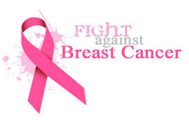

Education for Breast Cancer Patients
Neuromusculoskeletal Function (Movement Related Functional Assessment)
ROM - Range of Movement
Scar tissue formation after surgical resections, chemotherapy or radiation therapy.
Fibrosis after irradiation.
Strength
Muscle weaknesses from inflammatory intermediates produced by the tumor that are catabolic
and cause muscle wasting (cachexia).
Surgical denervation or damage
Radiation & Chemotherapy can damage muscle or nerve tissue. (Vinca alkaloids, taxanes
and platinum agents)
Grip dynamometers
Balance - Dysfunction can be caused from any of the following
Sensory Input
Central processing of balance-related information
Range of movement (ROM) limitations
Orthostatic hypotension
Muscle weakness
Peripheral neuropathies from taxane

Functional Activities, Mobility & Self-Care
Measures
Functional Mobility Assessment requires patients to physically perform specific tasks and
to answer questions, quantifying their level of function.
The Toronto Extremity Salvage Score, lower-extremity versionis a self administered questionnaire
that asks patients to indicate the level of difficulty they experience in dressing,grooming, mobility,
work, sports, and leisure
Mobility Assessment
Changing and maintaining body positions
Carrying
Moving and handling of objects
Walking
Moving around using transportation
Self Care Measures includes grooming, bathing and dressing
Karnofsky Performance Scale - A standard measure of the ability of adult patients with cancer to
perform ordinary tasks. scores range from 0 to 100. A higher score means the patient is better able
carry out daily activities
Barthel Index includes multiple components and diverse self-care activities. May be more responsive
in rehabilitation. Performance or self-report measure of independence in basic activities of daily living
Shoulder Measures for Breast Cancer
The Functional Assessment of Cancer Therapy Breast (FACT-B+4)
Disability of Arm, Shoulder and Hand (DASH) questionnaires